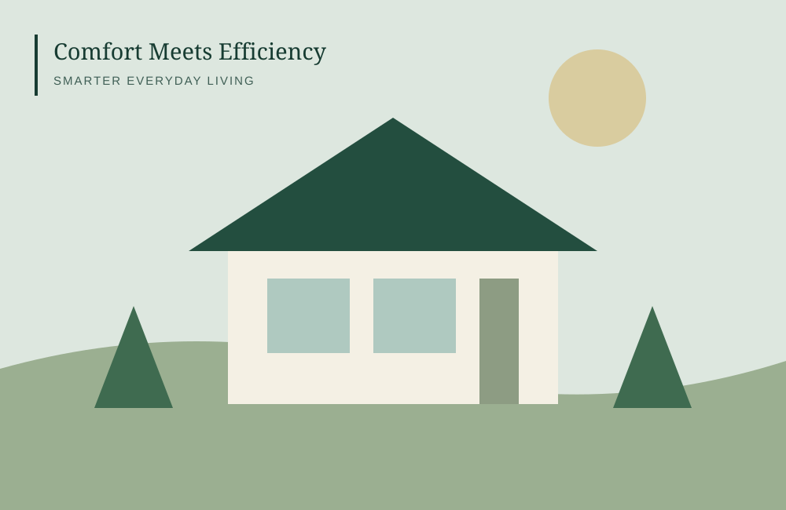

A high electricity bill can feel mysterious until you break it into the parts you can measure and influence. Start with the bill itself, compare usage across months, and then focus on the habits, equipment, and air leaks that matter most in your home. You do not need to make every upgrade at once; a small, measured change is a useful place to begin.
Start by understanding your utility bill
Your bill may include the energy charge, delivery or distribution charges, fixed customer fees, taxes, and adjustments. Some utilities use time-of-use prices that vary by hour; others use tiered rates or seasonal pricing. The total amount due is not always equal to kilowatt-hours (kWh) multiplied by the advertised energy rate. Review the bill's usage graph, billing-period length, rate plan, and any line items that changed. If something is unclear, your utility's official website or customer service can explain the tariff for your account.
Find the biggest energy uses
Heating and cooling often matter substantially, but the largest loads depend on climate, home size, insulation, equipment, and household routines. Electric water heating, clothes dryers, ovens, pool pumps, dehumidifiers, and older refrigerators can also contribute. Compare kWh rather than only dollars when rates have changed. If your utility offers hourly or daily usage data, use it to spot patterns such as a large overnight load or a spike during extreme weather.
Make low-cost changes first
Turn off lights in unoccupied rooms, use efficient bulbs where they are still needed, wash full loads when practical, and choose cold water for laundry when suitable for the detergent and fabric. Avoid leaving high-draw equipment running unnecessarily. These steps are inexpensive, but their impact varies with the device and how often it is used. Standby power is usually a smaller opportunity than an inefficient heating system or water heater, so prioritize proportionally.
Maintain heating and cooling equipment
Check the filter on your forced-air system at the interval recommended by the equipment maker and replace it when dirty. Keep supply and return vents clear, and arrange professional service when the system is not heating or cooling normally. A clogged filter can restrict airflow; however, a filter that is too restrictive for the system can also cause problems. Use thermostat schedules that suit your comfort and equipment, and avoid extreme settings that make the system work harder to recover.
Reduce drafts and unwanted heat transfer
Weatherstripping around movable doors and windows, caulking appropriate stationary gaps, and adding insulation where needed can improve comfort. Before sealing, understand ventilation and moisture needs, particularly around combustion appliances, bathrooms, kitchens, and attics. Large insulation or air-sealing projects deserve a qualified assessment so moisture, indoor air quality, and combustion safety are considered. In hot climates, shading and window coverings may reduce unwanted solar heat; in cold climates, draft control can make rooms more comfortable.
Track results instead of guessing
Record monthly kWh, total bill, average outdoor temperature if useful, and any changes you make. Compare similar seasons when possible: a mild month and a heat wave are not a fair comparison. Make one or two changes at a time, then check whether usage changed. If your utility offers an energy audit, usage portal, or demand-response program, review the terms and privacy implications before enrolling.
Use the electricity cost calculator
The HomeSmart electricity calculator estimates usage cost from kWh and a user-entered cents-per-kWh rate, then models a hypothetical reduction. It is a planning aid, not a replica of your utility bill. Add fixed charges, delivery fees, taxes, and time-of-use differences separately when comparing with the amount you actually pay.
Know when an upgrade may be worth it
Replacing a working appliance just because it is old is not always the best financial move. Compare expected energy use, purchase and installation cost, repair outlook, and how long you expect to stay in the home. For a major HVAC, water-heating, insulation, or window project, get more than one detailed quote and ask what assumptions support the savings estimate. A smaller maintenance step may be the sensible first move.
Frequently asked questions
What is the fastest way to lower an electricity bill?
Start by reviewing usage and rate details, then address obvious waste and HVAC filter or thermostat issues. The best first step depends on the home and season.
Does multiplying kWh by my rate give my exact bill?
Usually not. Delivery charges, fixed fees, taxes, time-of-use rates, and other adjustments may also apply.
Are energy-saving upgrades guaranteed to pay for themselves?
No. Results depend on climate, existing equipment, installation quality, utility prices, and how long you use the upgrade.
Sources and further reading
For current energy-efficiency and home safety information, consult official resources such as the U.S. Department of Energy's Energy Saver, ENERGY STAR, and relevant local building, utility, and emergency-management authorities. Solar incentives and program rules change; verify current details through official government and utility sources before relying on them.
This guide provides general educational information. Home conditions, local rules, utility tariffs, and individual circumstances vary.